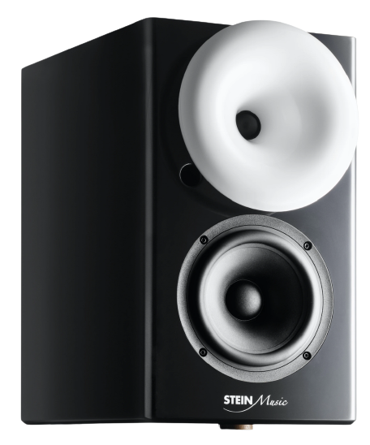

ZX9
SPEAKER
Upgrade your sound system with the all new ZX9 active speaker. It’s a bookshelf speaker system that offers truly wireless connectivity – creating new possibilities for more pleasing and practical audio setups.
SEE PRODUCT